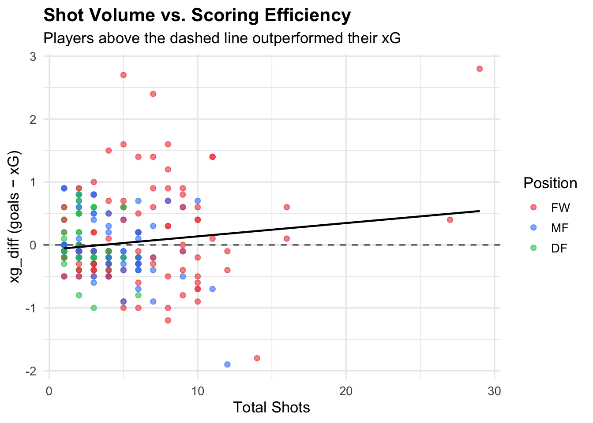
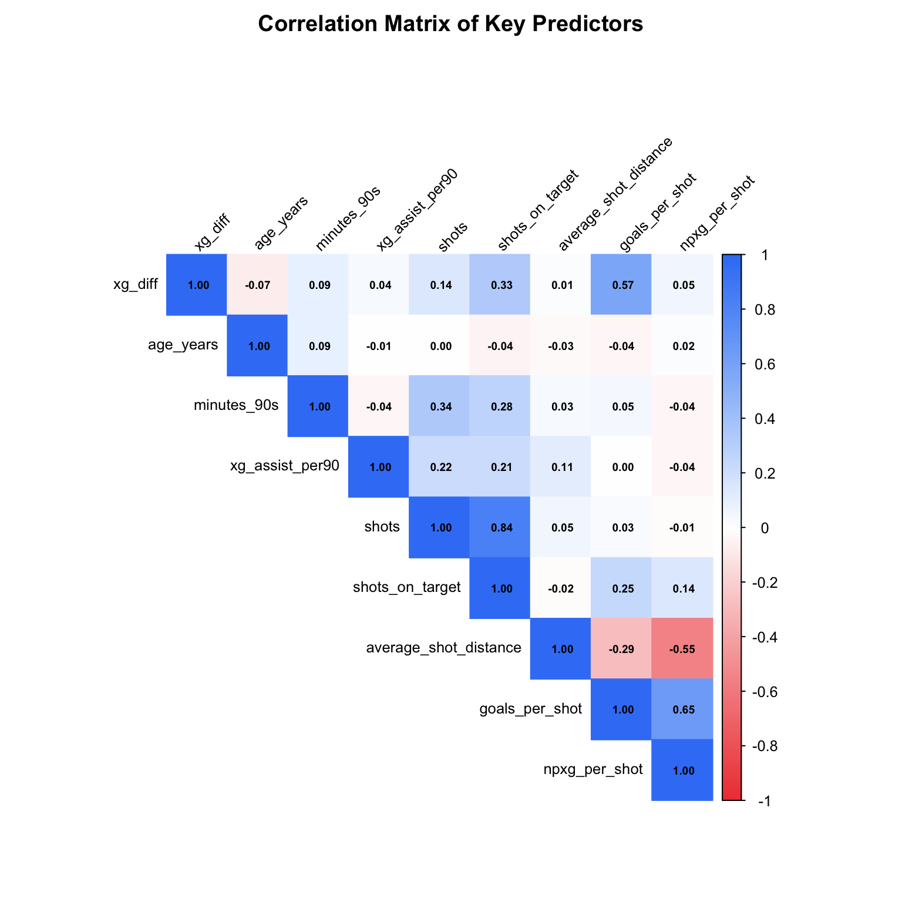

FIFA World Cup 2022 Scoring Efficiency Analysis - EDA
Exploratory Data Analysis
Introduction
This project studies scoring efficiency in the 2022 FIFA World Cup. Specifically, we ask whether player-level statistics such as position, age, playing time, shot volume, and shot quality can explain why some players score more or fewer goals than expected. Our main outcome variable is `xg_diff`, defined as actual goals minus expected goals. A positive value means a player overperformed their xG, while a negative value means they underperformed.
This question is important because expected goals are widely used in soccer analytics to evaluate player performance, but short tournaments like the World Cup may contain a large amount of randomness. By comparing exploratory visualizations with OLS, Ridge, and LASSO models, we evaluate whether scoring efficiency can be explained by basic player and shooting statistics.
Data
Our primary dataset was gathered from Kaggle which originally gathered data from FBRef, a widely used source for soccer statistics. We had initially tried scraping from FBRef itself but the licensing would not allow us to. The dataset contains 680 player-level observations from the 2022 FIFA World Cup, including key variables such as goals, expected goals, age, position, team, and a variety of per-90 performance metrics. We supplemented this with another Kaggle dataset that contained shooting-specific information such as shot volume, shots on target, average shot distance, and non-penalty xG per shot. These additional variables allow us to better capture the quality and quantity of a player’s scoring opportunities, not just their outcomes.
Exploring the Data
What is your outcome variable(s)?
Our outcome variable will be xg_diff, the measurement of scoring efficiency computed by taking the difference between Goals and xG.
How well does it measure the outcome you are interested?
This outcome variable measures how much a player converts relative to the quality of their chances. We believe it is a reasonable proxy but can be noisy with players who have low shot volume and xG models themselves have errors.
How does it relate to your expectations?
We would expect forwards to show high variance while other positions to cluster near zero. We would also expect younger, more creative players to slightly overperform.
What are your key explanatory variables? - age_years: player age - position: player position (FW, MF, DF, GK) - xG_assist_per90: expected goals assisted per 90 minutes, capturing a players playmaking contributions normalized for playing time. - minutes_90s: measurement of the amount of playing time a player gets relative to games - shots: total number of shot attempts a player has made throughout the tournament - shots_on_target: total number of shot attempts by a player that was within the goal frame - goals_per_shot: the ratio of goals scored to total shots taken - average_shot_distance: the average shot distance of all the shots taken by a single player - np_xg_per_shot: describes the quality of the shot by measuring the non-penalty expected goal per shot
Data Cleaning and Transformation
The raw dataset contained 680 player observations from the 2022 FIFA World Cup.
Filtering: We removed players with fewer than 1 full 90-minute equivalent play time and also dropped rows with missing values in xg, goals, position, and age_years. After doing this, we remained with 485 observations.
New variables: Our primary outcome variable, xg_diff, was created by subtracting a player’s xG from their actual goals. A positive value indicates overperformance while a negative value indicates underperformance. Lastly, the is_overperformer variable was created taking value 1 if a player scored more than their xG and 0 otherwise.
Age-parsing: The age variable was stored as a character string “years-days” format so we extracted only the years as an integer.
Figure 1
The distribution shows that most players cluster around zero, indicating that players generally perform close to their expected goals. There is a slight right tail, indicating that a smaller number of players significantly outperform their xG. Overall, extreme overperformers and underperformers are relatively rare.
Figure 2

This boxplot shows that forwards tend to have a wider spread and slightly higher median efficiency compared to other positions. Defenders and midfielders are generally centered around zero, suggesting they perform closer to expectations. Goalkeepers show no variation since they rarely score, so their efficiency remains near zero.
Figure 3

This Bar Chart reveals that midfielders and defenders actually underperform their xG while forwards overperform. We also notice that both goals and xg is nonexistent for goalkeepers, indicating that the GK position is irrelevant to our interest of study. These findings suggest that position is a meaningful predictor of xg_diff.
Figure 4

This suggests that age is not a strong predictor of scoring efficiency in this dataset, as points are widely scattered across all ages. Both younger and older players can either overperform or underperform their xG. This suggests that age is not a strong predictor of scoring efficiency in this dataset.
Figure 5

This horizontal bar chart highlights the players who differentiated the greatest from their statistical expectations. An observation is that all overperformers were led by forwards including the top goal scorer of the tournament Kylian Mbappe. This typically means these players have exceptional finishing abilities scoring from difficult angles/distances. The underscorers on the other hand are a mix of forwards, midfielders, and even defenders. This indicates that players like Jamal Musiala and Lautaro Martinez, who sit at the bottom, were frequently in good scoring positions but struggled with their final touch or encountered exceptional goalkeeping.
Figure 6

This xG vs Actual goals scatter plot provides a broader view of player efficiency across different positions (Fowards, Midfielders, Defenders, Goalkeepers). The dashed line represents the break-even point where players over the line overperformed and players under the line underperformed. Again, a key outlier is Kylian Mbappe representing the highest expected goal (roughly 5.2) and highest actual goal count (8). There is a clear cluster of observations near the origin which represents the limited scoring opportunities, primarily consisting of defenders and midfielders. The overall trend seems to be that majority of the high-volume scorers are forwards.
Figure 7

This bar chart highlights the players who most exceeded their expected goals during the tournament. Kylian Mbappé stands out as the most efficient scorer, significantly outperforming his xG compared to others. The remaining players also show strong positive efficiency, indicating exceptional finishing performance.
Figure 8

This figure compares the total amount of shots of each player with shooting efficiency. Each plot represents a single player and they are color coded by positions. The dotted line at 0 defines the margin where players above the line overperformed their expected goals and players below the line underperformed. Looking at the plot, many of the extreme overperformers cluster in the low to mid shot range (roughly 5-15), meaning the biggest positive surprise came from players who didn’t take many shots. The players with the most shots consist entirely of forwards, which are evenly spread above and below zero. This suggests that high shot volume doesn’t necessarily guarantee outperforming xG. Lastly, midfielders and defenders cluster around 0 which is not surprising because they rarely get as many opportunities as forwards to attack the goal.
Figure 9

This correlation plot visualizes the pairwise relationships between our outcome variable and all predictor variables. The most notable finding with respect to xg_diff is its strong positive correlation with goals_per_shot (\(0.57\)). This makes intuitive sense because players who convert a higher fraction of their shots directly score more goals relative to their xG. The second highest predictor is shots_on_target (\(0.33\)), suggesting that shot accuracy is more predictive of outperforming xG than raw shot volume. Interestingly, shots itself only correlates at \(0.14\) with our outcome variable, reinforcing that taking more shots does not guarantee overperformance.Almost every other predictor variable is near zero relative to our xg_diff. One notable relationship not involving xg_diff is the strong positive correlation (\(0.84\)) between shots and shots_on_target. This suggests multicollinearity and including both variables in the model would not be optimal. Similarly, goals_per_shot and npxg_per_shot have a strong positive correlation of \(0.65\), and average_shot_distance negatively correlates with npxg_per_shot at \(-0.55\), confirming that shots taken from farther away are of low quality.
Data Summary
goals xg xg_diff age_years
Min. :0.0000 Min. :0.000 Min. :-1.9000000 Min. :18.00
1st Qu.:0.0000 1st Qu.:0.000 1st Qu.:-0.2000000 1st Qu.:24.00
Median :0.0000 Median :0.100 Median : 0.0000000 Median :27.00
Mean :0.3278 Mean :0.327 Mean : 0.0008247 Mean :27.34
3rd Qu.:0.0000 3rd Qu.:0.400 3rd Qu.: 0.0000000 3rd Qu.:30.00
Max. :8.0000 Max. :6.600 Max. : 2.8000000 Max. :39.00
shots minutes_90s xg_assist_per90 average_shot_distance
Min. : 0.000 Min. :1.000 Min. :0.00000 Min. : 0.90
1st Qu.: 0.000 1st Qu.:1.700 1st Qu.:0.00000 1st Qu.:11.50
Median : 2.000 Median :2.800 Median :0.03000 Median :16.50
Mean : 2.691 Mean :2.803 Mean :0.08371 Mean :17.44
3rd Qu.: 4.000 3rd Qu.:3.400 3rd Qu.:0.11000 3rd Qu.:22.40
Max. :29.000 Max. :7.700 Max. :1.44000 Max. :46.60
NA's :124
npxg_per_shot
Min. :0.0100
1st Qu.:0.0400
Median :0.0800
Mean :0.1094
3rd Qu.:0.1300
Max. :0.9600
NA's :124 | Name | df |
| Number of rows | 485 |
| Number of columns | 40 |
| _______________________ | |
| Column type frequency: | |
| character | 4 |
| factor | 1 |
| numeric | 35 |
| ________________________ | |
| Group variables | None |
Variable type: character
| skim_variable | n_missing | complete_rate | min | max | empty | n_unique | whitespace |
|---|---|---|---|---|---|---|---|
| player | 0 | 1 | 4 | 26 | 0 | 485 | 0 |
| team | 0 | 1 | 5 | 14 | 0 | 32 | 0 |
| age | 0 | 1 | 6 | 6 | 0 | 459 | 0 |
| club | 0 | 1 | 4 | 33 | 0 | 203 | 0 |
Variable type: factor
| skim_variable | n_missing | complete_rate | ordered | n_unique | top_counts |
|---|---|---|---|---|---|
| position | 0 | 1 | FALSE | 4 | DF: 183, MF: 144, FW: 119, GK: 39 |
Variable type: numeric
| skim_variable | n_missing | complete_rate | mean | sd | p0 | p25 | p50 | p75 | p100 | hist |
|---|---|---|---|---|---|---|---|---|---|---|
| birth_year | 0 | 1.00 | 1994.63 | 4.15 | 1983.00 | 1992.00 | 1995.00 | 1998.00 | 2004.00 | ▁▅▇▇▃ |
| games | 0 | 1.00 | 3.48 | 1.40 | 1.00 | 3.00 | 3.00 | 4.00 | 7.00 | ▃▇▅▂▂ |
| games_starts | 0 | 1.00 | 2.80 | 1.53 | 0.00 | 2.00 | 3.00 | 4.00 | 7.00 | ▃▃▇▁▁ |
| minutes | 0 | 1.00 | 252.37 | 131.50 | 86.00 | 151.00 | 249.00 | 310.00 | 690.00 | ▇▇▃▁▁ |
| minutes_90s | 0 | 1.00 | 2.80 | 1.46 | 1.00 | 1.70 | 2.80 | 3.40 | 7.70 | ▇▇▃▁▁ |
| goals | 0 | 1.00 | 0.33 | 0.80 | 0.00 | 0.00 | 0.00 | 0.00 | 8.00 | ▇▁▁▁▁ |
| assists | 0 | 1.00 | 0.24 | 0.56 | 0.00 | 0.00 | 0.00 | 0.00 | 3.00 | ▇▂▁▁▁ |
| goals_pens | 0 | 1.00 | 0.29 | 0.68 | 0.00 | 0.00 | 0.00 | 0.00 | 6.00 | ▇▁▁▁▁ |
| pens_made | 0 | 1.00 | 0.04 | 0.25 | 0.00 | 0.00 | 0.00 | 0.00 | 4.00 | ▇▁▁▁▁ |
| pens_att | 0 | 1.00 | 0.05 | 0.31 | 0.00 | 0.00 | 0.00 | 0.00 | 5.00 | ▇▁▁▁▁ |
| cards_yellow | 0 | 1.00 | 0.41 | 0.61 | 0.00 | 0.00 | 0.00 | 1.00 | 3.00 | ▇▃▁▁▁ |
| cards_red | 0 | 1.00 | 0.01 | 0.08 | 0.00 | 0.00 | 0.00 | 0.00 | 1.00 | ▇▁▁▁▁ |
| goals_per90 | 0 | 1.00 | 0.12 | 0.29 | 0.00 | 0.00 | 0.00 | 0.00 | 2.05 | ▇▁▁▁▁ |
| assists_per90 | 0 | 1.00 | 0.08 | 0.19 | 0.00 | 0.00 | 0.00 | 0.00 | 1.19 | ▇▁▁▁▁ |
| goals_assists_per90 | 0 | 1.00 | 0.20 | 0.37 | 0.00 | 0.00 | 0.00 | 0.33 | 2.37 | ▇▁▁▁▁ |
| goals_pens_per90 | 0 | 1.00 | 0.11 | 0.28 | 0.00 | 0.00 | 0.00 | 0.00 | 2.05 | ▇▁▁▁▁ |
| goals_assists_pens_per90 | 0 | 1.00 | 0.19 | 0.36 | 0.00 | 0.00 | 0.00 | 0.33 | 2.37 | ▇▁▁▁▁ |
| xg | 0 | 1.00 | 0.33 | 0.60 | 0.00 | 0.00 | 0.10 | 0.40 | 6.60 | ▇▁▁▁▁ |
| npxg | 0 | 1.00 | 0.29 | 0.46 | 0.00 | 0.00 | 0.10 | 0.40 | 3.60 | ▇▁▁▁▁ |
| xg_assist | 0 | 1.00 | 0.22 | 0.36 | 0.00 | 0.00 | 0.10 | 0.30 | 3.10 | ▇▁▁▁▁ |
| npxg_xg_assist | 0 | 1.00 | 0.51 | 0.67 | 0.00 | 0.10 | 0.30 | 0.70 | 5.10 | ▇▁▁▁▁ |
| xg_per90 | 0 | 1.00 | 0.13 | 0.20 | 0.00 | 0.00 | 0.05 | 0.14 | 1.19 | ▇▁▁▁▁ |
| xg_assist_per90 | 0 | 1.00 | 0.08 | 0.14 | 0.00 | 0.00 | 0.03 | 0.11 | 1.44 | ▇▁▁▁▁ |
| xg_xg_assist_per90 | 0 | 1.00 | 0.21 | 0.26 | 0.00 | 0.03 | 0.12 | 0.28 | 1.54 | ▇▂▁▁▁ |
| npxg_per90 | 0 | 1.00 | 0.12 | 0.18 | 0.00 | 0.00 | 0.05 | 0.13 | 1.19 | ▇▁▁▁▁ |
| npxg_xg_assist_per90 | 0 | 1.00 | 0.20 | 0.25 | 0.00 | 0.03 | 0.12 | 0.27 | 1.54 | ▇▂▁▁▁ |
| xg_diff | 0 | 1.00 | 0.00 | 0.44 | -1.90 | -0.20 | 0.00 | 0.00 | 2.80 | ▁▆▇▁▁ |
| efficiency_per90 | 0 | 1.00 | -0.01 | 0.20 | -1.00 | -0.06 | -0.01 | 0.00 | 1.63 | ▁▇▂▁▁ |
| age_years | 0 | 1.00 | 27.34 | 4.15 | 18.00 | 24.00 | 27.00 | 30.00 | 39.00 | ▃▇▇▅▁ |
| is_overperformer | 0 | 1.00 | 0.18 | 0.39 | 0.00 | 0.00 | 0.00 | 0.00 | 1.00 | ▇▁▁▁▂ |
| shots | 0 | 1.00 | 2.69 | 3.34 | 0.00 | 0.00 | 2.00 | 4.00 | 29.00 | ▇▂▁▁▁ |
| shots_on_target | 0 | 1.00 | 0.89 | 1.50 | 0.00 | 0.00 | 0.00 | 1.00 | 13.00 | ▇▁▁▁▁ |
| average_shot_distance | 124 | 0.74 | 17.44 | 7.24 | 0.90 | 11.50 | 16.50 | 22.40 | 46.60 | ▂▇▅▂▁ |
| goals_per_shot | 124 | 0.74 | 0.10 | 0.21 | 0.00 | 0.00 | 0.00 | 0.11 | 1.00 | ▇▁▁▁▁ |
| npxg_per_shot | 124 | 0.74 | 0.11 | 0.12 | 0.01 | 0.04 | 0.08 | 0.13 | 0.96 | ▇▁▁▁▁ |
Modeling(Methodology)
We model xg_diff (scoring efficiency computed as goals - expected goals) as a function of player age, position, playing time, playmaking context, shot volume, shot distance, and shot quality. We excluded goalkeepers from all models as they are not meaningful for scoring analysis. We also exclude goals_per_shot and shots_on_target from predictors due to the high correlation we found from the correlation matrix. All three models (OLS, Ridge, LASSO) are evaluated using 10-fold cross-validation with both RMSE and MAE as performance metrics.
Our model is specified as:
\[xg\_diff = \beta_0 + \beta_1(age\_years) + \beta_2(position) + \beta_3(minutes\_90s) + \\\beta_4(xg\_assist\_per90) + \beta_5(shots) + \beta_6(average\_shot\_distance) + \\\beta_7(npxg\_per\_shot) + \varepsilon\]
OLS
| term | estimate | std.error | statistic | p.value |
|---|---|---|---|---|
| (Intercept) | 0.1178 | 0.2134 | 0.5521 | 0.5812 |
| age_years | -0.0096 | 0.0066 | -1.4522 | 0.1473 |
| positionMF | -0.1752 | 0.0738 | -2.3732 | 0.0182 |
| positionDF | -0.1346 | 0.0804 | -1.6746 | 0.0949 |
| minutes_90s | 0.0351 | 0.0213 | 1.6489 | 0.1001 |
| xg_assist_per90 | 0.0082 | 0.1984 | 0.0413 | 0.9671 |
| shots | 0.0070 | 0.0101 | 0.6965 | 0.4866 |
| average_shot_distance | 0.0048 | 0.0046 | 1.0504 | 0.2943 |
| npxg_per_shot | 0.3476 | 0.2736 | 1.2704 | 0.2048 |
The OLS model returns an \(R^2\) of \(0.048\), meaning our predictors explain about \(4.8%\) of the variance in xg_diff. This is extremely low but not too surprising as it shows scoring efficiency is very noisy and difficult to predict from player-level statistics alone. positionMF was our only statistically significant coefficient indicating that midfielders on average score approximately 0.17 goals less than their xG relative to forwards with all other variables held constant. positionDF is also marginally significant.
Ridge
Ridge regression applies L2 regularization which penalizes the sum of squares coefficients to shrink all predictors towards zero without eliminating any. The optimal lambda selected by cross-validation is 0.3588 indicating moderate regularization strength.
LASSO
LASSO regression applies L1 regularization which performs automatic variable selection by shrinking selected coefficients to zero.
| Variable | Coefficient | Status |
|---|---|---|
| npxg_per_shot | 0.2735 | Retained |
| positionMF | -0.1514 | Retained |
| positionDF | -0.1139 | Retained |
| minutes_90s | 0.0304 | Retained |
| age_years | -0.0086 | Retained |
| shots | 0.0080 | Retained |
| average_shot_distance | 0.0034 | Retained |
| positionGK | 0.0000 | Zeroed Out |
| xg_assist_per90 | 0.0000 | Zeroed Out |
With an optimal lamdba of \(0.004\), LASSO zeroed out positionGK and xg_assist_per90. The first variable makes sense as goalkeepers do not contribute to scoring goals but the creativity metric being zeroed out is a surprise. np_xg_per_shot is retained with the largest magnitude coefficient (\(0.2735\)). The two position dummies (positionMF, positionDF) are retained and have negative coefficients, reinforcing that non-forward positions tend to underperform their xG. The remaining retained variables (minutes_90s, age_years, shots, average_shot_distance) all have very small coefficients, suggesting their contribution is minimal but non-negligible after regularization.
| Model | CV RMSE | CV MAE | Optimal Lambda |
|---|---|---|---|
| OLS | 0.5122 | 0.3297 | NA |
| Ridge | 0.5093 | 0.3262 | 0.3588 |
| LASSO | 0.5110 | 0.3287 | 0.0040 |
Ridge regression receives the lowest CV RMSE and CV MAE, making it the best performing model on both metrics. However, the difference across all three models are very small indicating that regularization provides little benefit over the standard OLS. This likely reflects the fact that our predictors are already weakly correlated with xg_diff so there is little to gain from shrinkage. Overall, while Ridge edges out the other methods, all three models suggest that the selected predictors have limited power in explaining scoring efficiency, and future modeling could benefit from additional data sources.
Results
The exploratory analysis shows that most players had an `xg_diff` close to zero, meaning most players scored near their expected goals. However, a small number of players strongly overperformed or underperformed. Position appeared to matter more than age or raw shot volume. Forwards had the widest spread in scoring efficiency and included most of the top overperformers, while midfielders and defenders tended to cluster closer to zero or slightly below zero.
The correlation matrix showed that `goals_per_shot` had the strongest correlation with `xg_diff`, followed by `shots_on_target`. However, these variables were excluded from the final models because they are closely related to the outcome or highly correlated with other shooting variables. Other predictors, including age, minutes, shots, and average shot distance, had weak relationships with scoring efficiency.
The OLS model had an \(R^2\) of 0.048, meaning the model explained only about 4.8% of the variation in scoring efficiency. This suggests that the selected player-level variables have limited explanatory power. Ridge regression had the best cross-validated RMSE and MAE, but the difference between OLS, Ridge, and LASSO was very small. Overall, the modeling results suggest that scoring efficiency in a short tournament is difficult to predict using only basic player and shooting statistics.
Discussion
Our analysis suggests that scoring efficiency in the 2022 FIFA World Cup is difficult to predict using basic player-level and shooting statistics alone. Although some variables are related to overperformance, most predictors have weak relationships with `xg_diff`, which supports the idea that finishing above or below expected goals is highly noisy in a short tournament setting. The distribution of `xg_diff` shows that most players finished close to their expected goals, while only a small number of players strongly overperformed or underperformed.
Position appears to be one of the most meaningful factors in our analysis. Forwards had the widest spread in scoring efficiency and were more likely to appear among the strongest overperformers. This makes sense because forwards take more shots and are usually the primary goal-scoring players on their teams. Midfielders and defenders tended to cluster closer to zero or slightly below zero, suggesting that they generally scored closer to or below expectation. Goalkeepers were not meaningful for this research question because they rarely produce scoring opportunities, so excluding them from the modeling stage was appropriate.
The relationship between age and scoring efficiency was weak. Players of different ages appeared on both sides of the overperformance line, which suggests that age alone is not a strong predictor of whether a player will score more than expected. Similarly, total shot volume was not strongly associated with overperforming xG. Some players with many shots still underperformed, while some of the largest overperformers came from low or medium shot volume. This suggests that simply taking more shots does not guarantee better finishing efficiency.
The correlation matrix gave more useful insight into which variables were most connected to scoring efficiency. `goals_per_shot` had the strongest positive correlation with `xg_diff`, which is intuitive because players who score on a higher percentage of their shots are more likely to outperform their xG. `shots_on_target` was also positively related to `xg_diff`, suggesting that shot accuracy matters more than raw shot quantity. However, we excluded `goals_per_shot` and `shots_on_target` from the final models because they are highly related to the outcome or strongly correlated with other shooting variables, which could create multicollinearity or make the model less interpretable.
The modeling results reinforce the main finding from the EDA: scoring efficiency is difficult to explain with the variables available in this dataset. The OLS model had an \(R^2\) of only 0.048, meaning the predictors explained about 4.8% of the variation in `xg_diff`. Ridge regression performed slightly better than OLS and LASSO based on cross-validated RMSE and MAE, but the differences between the three models were very small. This indicates that regularization did not substantially improve predictive performance. LASSO retained variables such as `npxg_per_shot`, position, minutes, age, shots, and average shot distance, but most coefficients were small, again suggesting limited explanatory power.
One important limitation of this project is that the World Cup is a small and short tournament. Many players have limited minutes and few shots, so one goal or one missed chance can greatly change a player’s `xg_diff`. This makes scoring efficiency much more unstable than it would be across a full club season. Another limitation is that xG models are not perfect. They estimate chance quality based on available information, but they may not fully capture defensive pressure, goalkeeper positioning, shot technique, tactical context, or game state. Also, our dataset is player-level rather than shot-level, so we lose detailed information about each individual chance.
Future work could improve this analysis by using shot-level data instead of aggregated player-level statistics. Shot-level data would allow us to include variables such as shot angle, body part used, defensive pressure, pass type, match situation, and goalkeeper position. It would also be useful to compare World Cup performance with players’ club performance across a full season to see whether overperformance in the tournament reflects true finishing skill or short-term randomness. Finally, adding team-level variables such as possession, attacking style, and strength of opponents could help explain why some players receive higher-quality chances than others.
Overall, our results suggest that scoring efficiency is not easily predicted from simple player statistics. Position and shooting quality provide some insight, but most of the variation in `xg_diff` appears to come from randomness, small sample size, and contextual factors not captured in the dataset. This supports the idea that xG overperformance in a short tournament should be interpreted carefully rather than treated as a stable measure of finishing ability.
Codebook
The codebook can be found in our GitHub in our data/ folder: https://github.com/zibojerryxu/Math-244-final-project-Team-GG/blob/main/data/dataset_readme.md